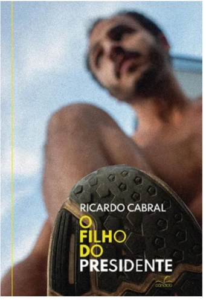
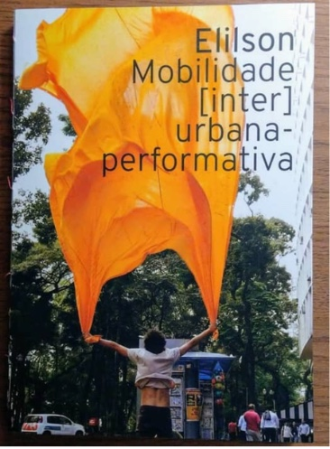

O filho do presidente
Assina todas as fotos do livro de Ricardo Cabral, publicado pela Edições Cândido.
conheça o livro
Assina todas as fotos do livro de Ricardo Cabral, publicado pela Edições Cândido.
conheça o livro